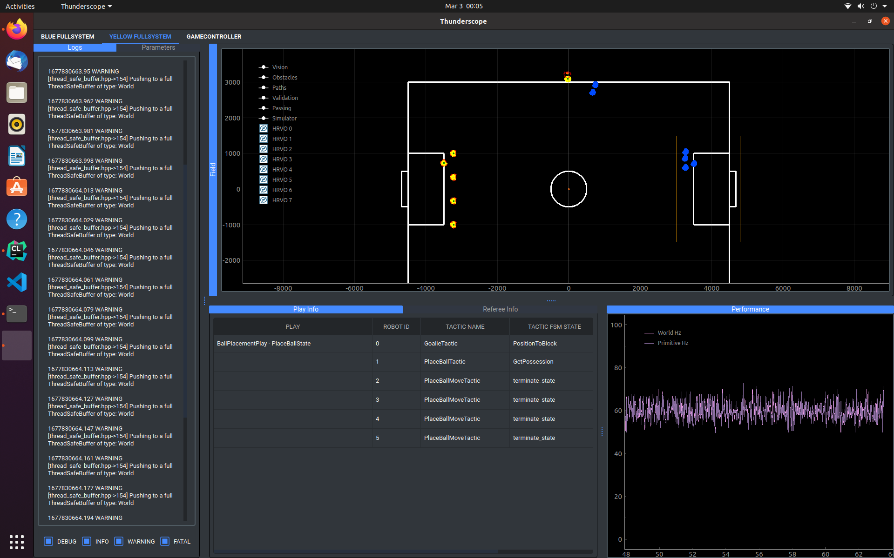
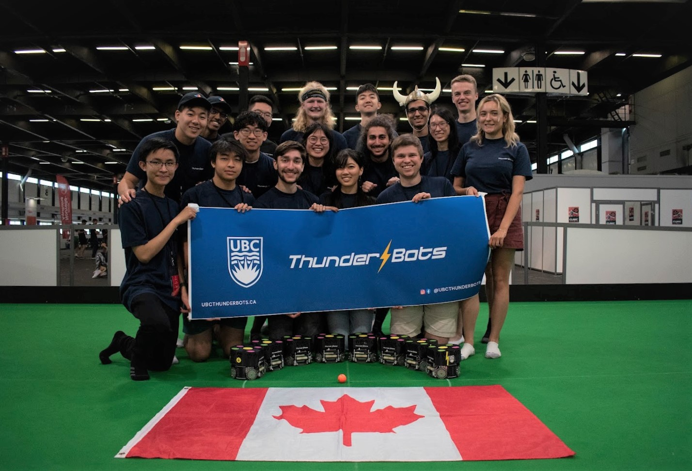

Soccer playing robots.
Think roomba... but cooler.
UBC Thunderbots is the University of British Columbia's RoboCup SSL team. We build and program autonomous soccer playing robots. Our league, the RoboCup Small Size League (SSL) is largely open source, meaning most of the software running on every team's robot is openly available to the public.
I joined Thunderbots' software team back in September 2022, and since then have mainly worked on our gameplay project. This is essentially the high level strategy that our robots follow during the course of a game. Things like offensive and defensive positioning and strategy, as well as specific plays for situations such as penalty kicks or ball placement.
07/11/2023: RoboCup 2023 in Bordeaux, France

This year, I had the huge honor of being part of the small subset of Thunderbots that represented the University of British Columbia at this year's RoboCup competition in Bordeaux, France. After 7 days of coding, field testing, and strategizing, our team managed to place 4th out of 12 teams in the Small Size League. It was awesome being able to attend my first ever RoboCup. I got to meet members from other teams and I learned a lot about our robots and our team - hopefully enough to prepare us better for next year. There is still a lot of work to be done and I look forward to it.